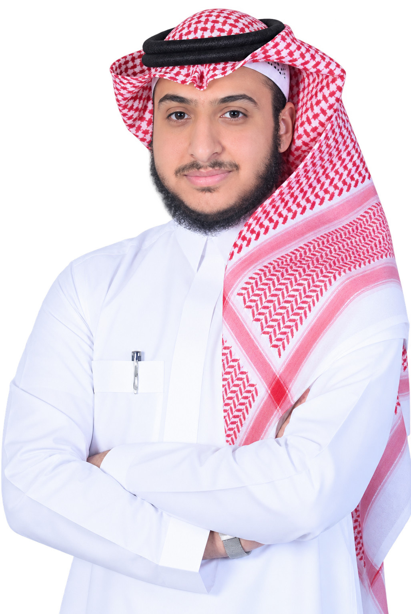
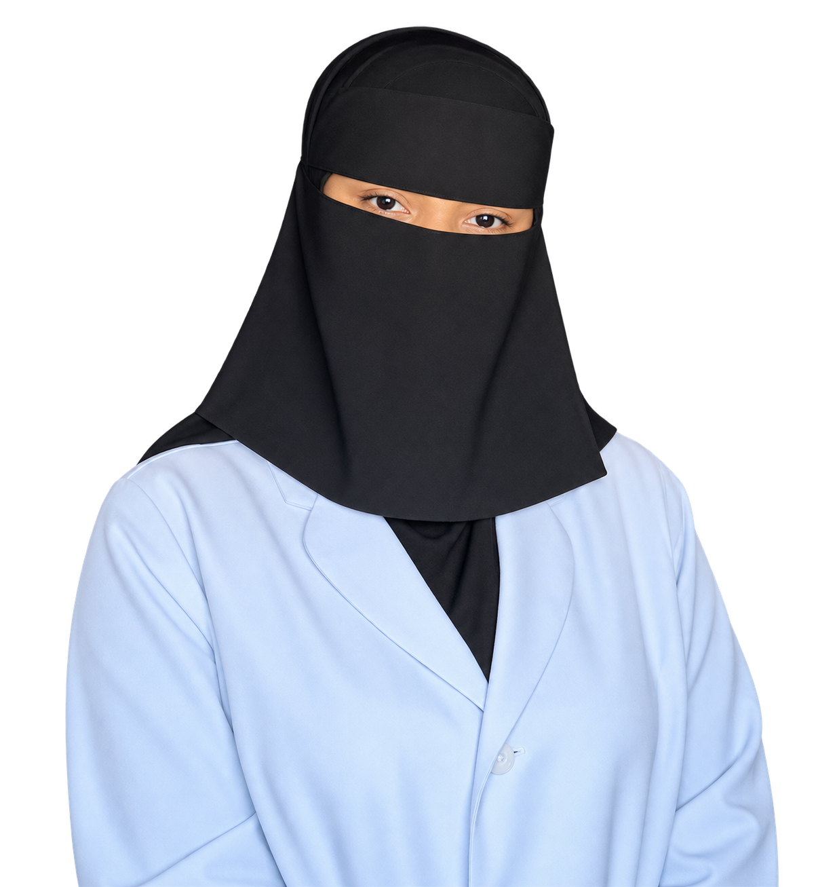
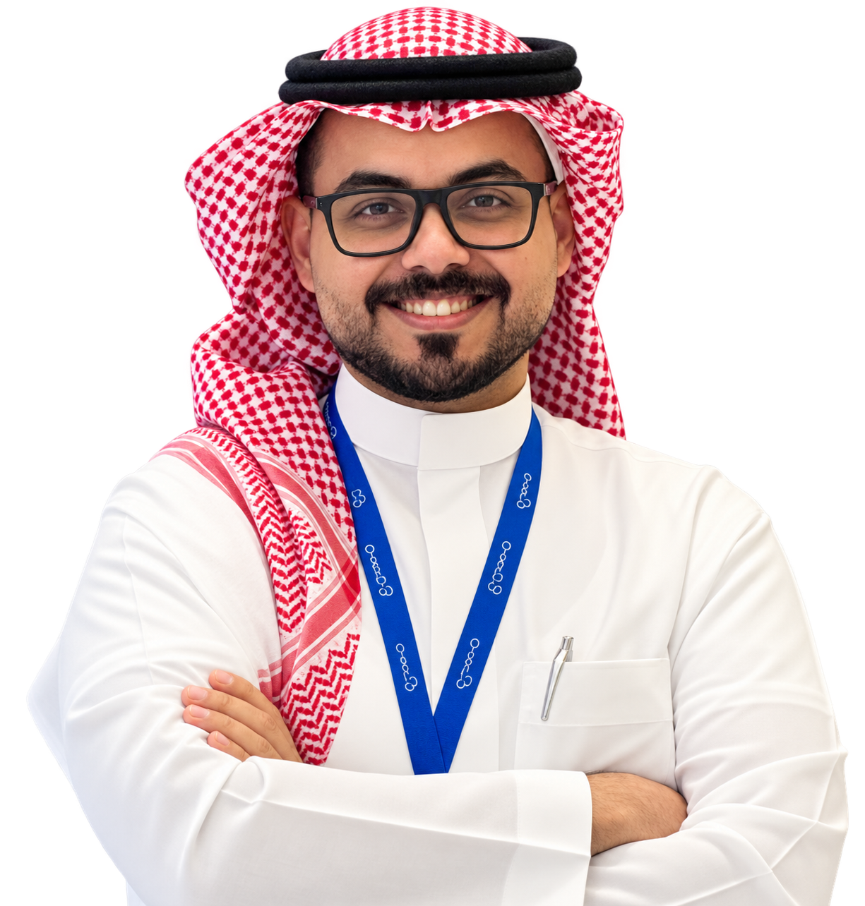
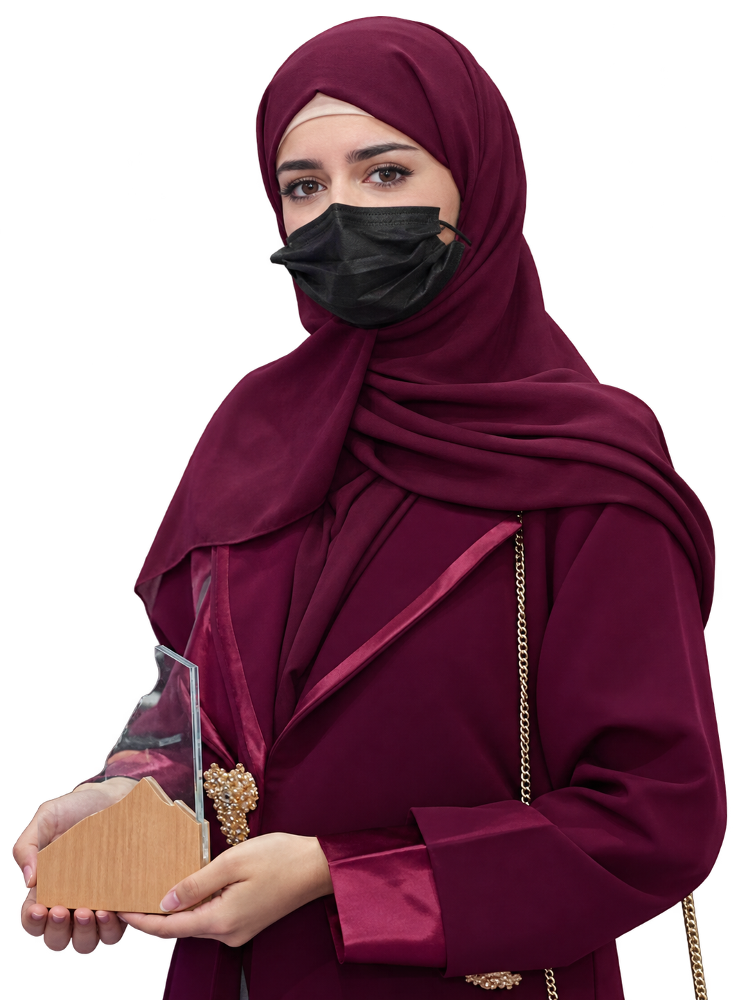

FootGuard · محطة فحص وقائي
خطاكSTEPS · FootGuard
محطة فحص وقائي ذكية تكتشف خطر إصابة قدم الحاج قبل أن تحدث.
نفحص · نكتشف · نحمي · نوجّه

محطة فحص وقائي ذكية تكتشف خطر إصابة قدم الحاج قبل أن تحدث.
نفحص · نكتشف · نحمي · نوجّه
المشكلة، والدليل، وكيف يعمل الفحص، والنتيجة.
ثلاثة روابط تكفي لفهم المشروع كاملًا.
المشكلة والدليل العلمي والحل والجهاز ونموذج العمل، بالعربية والإنجليزية.
افتح العرض ←رحلة الفحص كاملة: البطاقة، الفحص، الأسئلة، القياس، والنتيجة، ببيانات تجريبية.
جرّب النموذج ←طبقات الجهاز ومكوناته: دوّر النموذج وكبّره واختر أي طبقة.
استكشف الجهاز ←ما المشكلة، وما الحل، ولماذا الآن.
الحاج يمشي مسافات طويلة على أسطح حارة، ونتعامل مع إصابات القدم بعد ظهورها.
محطة تجمع التصوير البصري والحراري وقياس الضغط مع الأسئلة الصحية في فحص واحد.
خريطة مخاطر للقدم وفئة إجراء واضحة وتوصيات وقائية، وإحالة للمختص عند الحاجة.
لا يجمع أي بديل حالي هذه الحساسات مع الفحص السريري في محطة مصممة للحج.
ملف واحد يلخّص المشروع للقراءة لاحقًا.
خبرات تجمع الطب والصحة العامة والتقنية.



